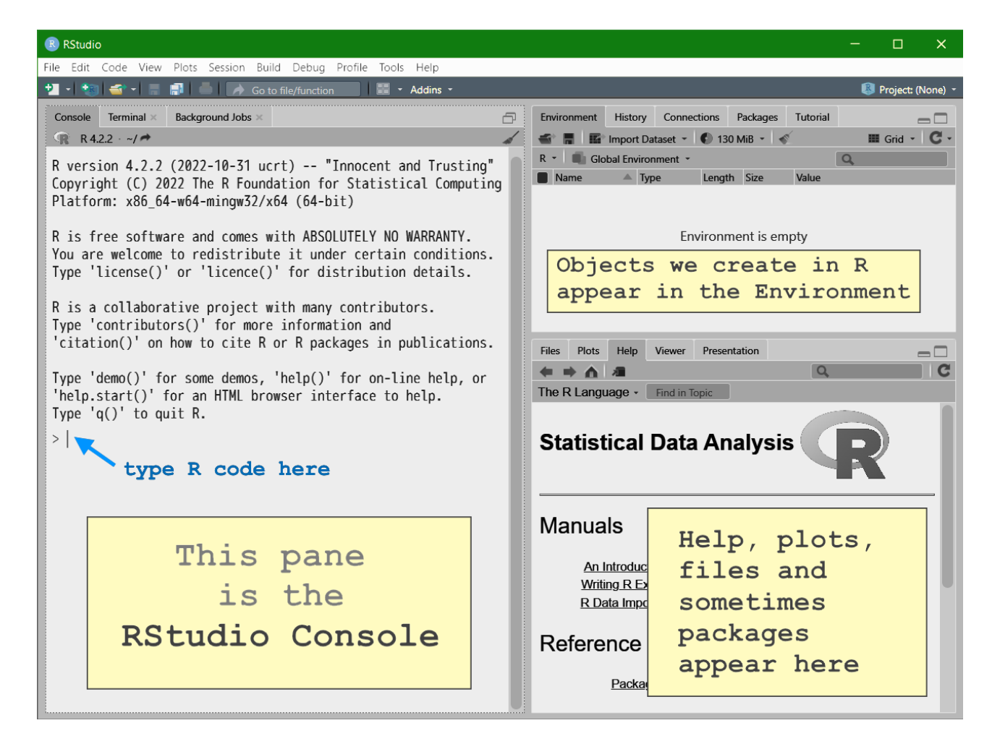
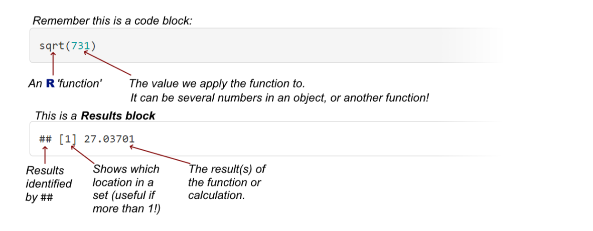

R is called a "statistical computing
environment". This means two things:
R is software that allows us to perform statistical
analysis of data;
R is a type of computer programming code (a
language).
In R these two features are combined so that we
perform the tasks we need to by writing instructions in
R code. We commonly want to:
create or input data
format, store, and save our data
perform statistical and numerical analysis of our data
display our data and report our analysis in graphs and tables
By using R code to do this, we can easily
reproduce our analyses, that is, use exactly the same
procedures again on additional data, or simply re-create what we have
done. We can save our R code in simple 'text' files, or
even in a document called an R Notebook which uses a
few additional coding features (called 'R markdown') to let us save our
code and the results of our analysis in the same document. We use R
markdown to produce documents such as reports (this document is created
using R markdown).
"...R has developed into a powerful and much used open source tool
... for advanced statistical data analysis..."
To make our job of using R easier, we'll be using
the RStudio program. RStudio is an IDE or 'integrated
development environment' which puts everything we need for R coding in
one place, and has some helpful tools (such as predictive text for code,
and some menu-driven functions) to make coding easier. In this document,
when we say 'R', we really mean 'R in the RStudio
environment'.

Figure 1: The RStudio window with a very brief explanation of some
different sub-panes.
1.2 Three things we
really need to know about using R
How data are stored. R can
handle many different types of data, such as numbers, text, categories,
spatial coordinates, images, and so on. R uses various
types of objects to store different types of data in different
ways.
Code-based instructions. If we want
R to do something for us, we need to give it
instructions. We do this in other software too, commonly by using a
mouse or other pointing device to click and select options from a menu.
For example, in R we can sort a table of data by
writing the instructions in R code:
You don't have to remember this (yet). The code here is also to
illustrate that, in this document, R code will be shown
in blocks like the one above having a
shaded background and fixed-space font.
In Excel, we can do the same thing, but we would use a sequence of
point-and-click operations, such as that shown below:
using the mouse to select the cells we want to sort;
clicking on the Data menu;
clicking on the Sort button;
choosing the column we want to sort by in the dialog box that
appears;
clicking 'OK'.
(We did say three things.) R is
very literal, and needs precise instructions to do
everything. A small error in our code will mean we get wrong, or no,
results. For example, all R code is case-sensitive.
Also, if we don't tell R where to look for things, it won't try anywhere
else just in case we might have intended another location! Go
here for a great page on common errors in R and how to
fix them
1.3 Types of data we
commonly use in R
1.3.1 Single numbers
R can work with single numbers, much like a complex
calculator.
To "run" R code, we can type it into the RStudio
Console and press the enter key. We will see the results of
running the code also in the Console, below the code we just
entered.
123 + 456
## [1] 579
sqrt(731)
## [1] 27.03701

Figure 2: Understanding simple R functions and output.
We don't usually use R like this, but it's handy to know that we have
a calculator handy if we need in in the R Console!
R functions
This is also the place to introduce Functions in R.
We just used a function – to calculate a square root:
sqrt(731).
An R function is identified by a name such as
sqrt, t.test or plot, followed by
arguments in parentheses ( ) (the
parentheses can be empty, for example help.start() – try
it!). We used the argument 731 in the sqrt()
function – some functions require several arguments, as you will see.
Some arguments have default 'built-in' values.
There are huge numbers of built-in functions in R
which we can use after first installing R, "straight
out of the box" (we call this "base R"). For instance,
see the R reference card v2 by Matt Baggott.
If we can't find the functions we need, they may be available in
R packages which are additional libraries of functions
that we can install from within the R environment. A
commonly used package is car, the companion to
applied regression. We would install this into
R using a function
install.packages("car"), which stores the library on our
device. To use the functions in the car package we would
load the library into our R session by running
library(car).
We can also write our own functions in R and we may
show you examples of these as you progress through this course.
1.3.2 Vectors
A vector is a one-dimensional set of numbers, similar to a column or
row of values in a spreadsheet. We use the simple function
c() to combine, or put together, a set of
values. The code below shows how we can make a vector
object using the assign code <- to give
our vector a name of our choice. Just by entering the vector object's
name, we can then see its contents:
a <- c(1,3,5,7,9,2,4,6,8,10)
a
## [1] 1 3 5 7 9 2 4 6 8 10
We can also check the type of object using the class()
function, or using another function that asks if the object is in a
specific class (e.g. is.vector() or
is.character()).
class(a)
## [1] "numeric"
is.vector(a)
## [1] TRUE
is.character(a)
## [1] FALSE
We can also make use of the square brackets: remember from Figure 1
that the values in square brackets [ ] are the index for a
set of values. For a vector, which is one dimensional, we just need one
value in [ ] at the end of our object name to select
particular values:
a[3]
## [1] 5
# we can also use a range of values
a[7:10]
## [1] 4 6 8 10
There are some other useful ways to make vectors in
R, such as the functions seq()
(sequence) and rep()
(repeat) (and many others!). Try changing some of the
code below and running it, to make sure you understand the results each
time.
# make a vector with a sequence of numbers from 2 to 80 in steps of 2
b <- seq(2,80,2)
b
A matrix is a two-dimensional set of data with rows and columns. All
of the entries must be the same type (e.g. integer, numeric,
character). We can make a matrix using a vector (e.g.
b from above), so long as we specify how many rows and/or
columns we want:
We can locate each value in the matrix using a two-part index in
square brackets [row, column]. Here are some examples (note
that we always need the comma):
# single value at [row,column]
selection <- m[2,3]
selection
## [1] 22
# a whole row by itself
selection <- m[4,]
selection
## [1] 50 52 54 56 58 60 62 64
# a whole column by itself
selection <- m[,8]
selection
## [1] 16 32 48 64 80
1.3.4 Data frames
Data frames are one of the most common ways to store data in
R. They are two-dimensional like matrices, with rows
and columns, but the columns can contain different types of data such as
numbers (integer or numeric), text (character), or categories (factor),
etc..
Data frame are one of the best ways to store "real" data which can
contain information such as sample IDs, treatments, replicates,
coordinates, categories, measurements, dates/times, etc. Let's
make one and look at its properties.
df <- data.frame(Name = c("Sample 1","Sample 2","Sample 3","Sample 4","Sample 5"),
Group = as.factor(c("New","New","Old","Old","Old")),
Value = c(2.34,4.56,3.45,5.67,6.54),
Count = as.integer(c(21,35,19,18,27)))
df
## Name Group Value Count
## 1 Sample 1 New 2.34 21
## 2 Sample 2 New 4.56 35
## 3 Sample 3 Old 3.45 19
## 4 Sample 4 Old 5.67 18
## 5 Sample 5 Old 6.54 27
We can see that we made a data frame 'df' with 4 columns
and 5 rows (the first column of output is the row number, not part of
the data frame's column count). All the columns contain a different type
of information which we can see using the str()
(structure) function:
The output of str() shows that the column called Name
contains chr (character = text) information,
Group is a Factor(i.e. categorical
information) with two levels or categories,
Value is num (numeric = real numbers), and
Count is int (integer).
Data frames are a very common way of storing our
data in the R environment. The rows of our data frame
represent our observations or 'samples'. The columns of
a data frame are the variables – information about the
samples which may be identifying information (character or categorical
information), or measurements (usually numeric information such as
counts or concentrations).
We should notice that each column name is preceded by a dollar sign
$, and we also use this to specify single columns from a
data frame:
# both lines of code below should give the same output!
df$Value
## [1] 2.34 4.56 3.45 5.67 6.54
df[,3]
## [1] 2.34 4.56 3.45 5.67 6.54
1.3.5 Other types of
object in R
There are many other object types in R!
Many of these are specialised to handle specific types of data, such as
time series, spatial data, or raster images. One of the more common
R objects is the list, which is a
collection of different object types – often if we save the output of a
function, it will be as an object of class list.
1.4 Working with
files
1.4.1 Telling RStudio
where to find our files
We've just seen how we can create data in R by typing it in, and some
of our examples in class will do this, but the most common way of
getting our data into R is to read (or "input")
from a file.
Before we read any files, though, we need to tell R
where to find the files we've saved, downloaded, or created. There are 2
ways to do this in RStudio:
In the top level menu, click Session » Set Working Directory »
Choose Directory. This will open a window showing just folders (=
directories). Click on the folder where your files are, and
click the Open
button.
With the RStudio Files pane already showing the
files you are working with, click ⚙More, then Set As Working
Directory.
1.4.2 Opening (and
saving) a code file
If we write some code that works, it's good to save it so we can use
it again or adapt it for a similar task. In classes, we will provide you
with code files (having the extension .R) to help you learn
what R code does.
To open a code file we have a few options:
just type ctrl-O, and choose the file from the 'Open
file' window that appears
click on the open file icon, and choose the file from the 'Open file' window
that appears
click on the file shown in the Files pane (lower right,
see Figure 1) in the RStudio screen.
You can type code into a new file made by the keystroke combination
ctrl-shift-N (for other new file types, use the RStudio
menu File/New file).
Files can be saved by typing ctrl-S (you will be
prompted for a new file name the first time you save a new file), or
clicking the file-save icon.
1.4.3 Opening a data
file
In classes, we will mainly supply data as CSV (Comma
Separated Value, or .csv) files. These are a simple and
widely-used way to store tabular data such as found in an
R data frame, and can also be opened in Excel and other
software.
R has a specific function for reading .csv files,
read.csv(). If we know that our file contains categorical
information present as text, we should also include the option stringsAsFactors
= TRUE
(we can shorten TRUE
to T).
## Name Group Value Count
## 1 Sample 1 New 2.34 21
## 2 Sample 2 New 4.56 35
## 3 Sample 3 Old 3.45 19
## 4 Sample 4 Old 5.67 18
## 5 Sample 5 Old 6.54 27
If the file is not in our Working Directory, we would need to specify
the whole path. We can also read directly from an internet address:
You might notice that we didn't include file = in the
second example above. We can do this because file = is the
option R expects first in the read.csv()
function.
1.4.4 Built-in R
Help
How do we find out the order of options in a function? Well,
R and RStudio have excellent Help
utilities. For example, if we run the code help("read.csv")
or just ?read.csv in the RStudio Console (usually the
bottom-left pane), this will open the relevant help page in the Help
pane at (lower) right. We can also search directly in the help pane.
If we're unsure about anything in R, especially, we may be able to
find it in the Help system. A very useful place to start is by running
the code below to get to the general help page: